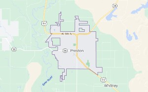
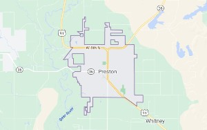

Soda Springs
Weather Summary
Current:
High:
Wind Chill:
Humidity:
Wind Chill:
°
°
°
%
xxmph
Weather for town at lunch time for the next 5 days.
Upcoming Events:
Soda Springs Geyser - Beyond Utah Adventure
Although, the Soda Springs Captive Geyser never turned into a major tourist attraction, it did get some attention in its early years. Within weeks of its creation, the Secatery of Interior sent a telegram to the city of Soda Springs asking them to turn off the geyser. This request was due to the fact it was throwing the world famous “Old Faithful Geyser” off schedule, which is located in Yellow Stone National Park. Today the Captive Geyser is equipped with a timer valve that allows the geyser to erupt every hour on the hour throughout the year without interrupting the “Old Faithful Geyser”. On windless days this man made geyser has been reported to reach heights between 100 and 150 feet. The mineral laden water has built up over time creating a beautiful light brown rock formation around the geyser. There is a walkway with interpretive signs built around the geyser that allows visitors to explore the area.
Contact Us
Address:
30 N 1st E
Preston, Idaho 83263
Phone:
(801) 999-9999
Email:
weatherrainorshine.com
 
